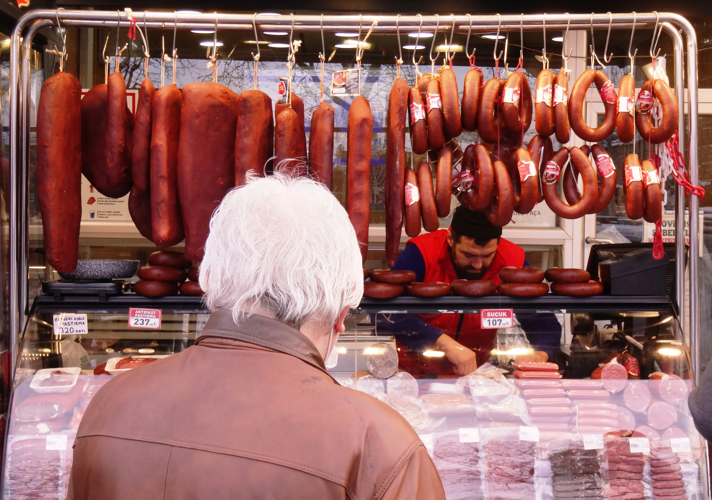

Kealedira Holdings focuses exclusively on three essential processed meat distribution categories:

Garlic & French Polony: Large-format and retail-sized chubs ideal for delis, sandwich shops, and household retail.
Chicken & Beef Polony: High-demand protein options in various chub sizes.

Traditional Smoked Russians: Deeply smoked, high-flavor russians popular in fast food, takeaways, and retail.
Cheese Russians: Melt-in-the-middle processed russians for fast-food outlets and delis.
Red & Smoked Viennas: Everyday household staples available in family packs and bulk catering crates.
Chicken & Beef Viennas: Variety offerings tailored to diverse customer dietary preferences.